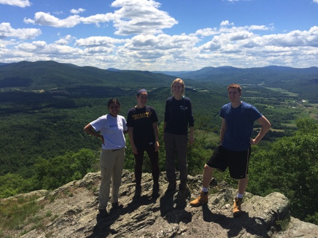

<!DOCTYPE html>

<html>

<head>

<meta charset="utf-8" />
<meta name="generator" content="pandoc" />
<meta http-equiv="X-UA-Compatible" content="IE=EDGE" />


<title>Bradley J. Cosentino</title>

<script src="site_libs/header-attrs-2.21/header-attrs.js"></script>
<script src="site_libs/jquery-3.6.0/jquery-3.6.0.min.js"></script>
<meta name="viewport" content="width=device-width, initial-scale=1" />
<link href="site_libs/bootstrap-3.3.5/css/cosmo.min.css" rel="stylesheet" />
<script src="site_libs/bootstrap-3.3.5/js/bootstrap.min.js"></script>
<script src="site_libs/bootstrap-3.3.5/shim/html5shiv.min.js"></script>
<script src="site_libs/bootstrap-3.3.5/shim/respond.min.js"></script>
<style>h1 {font-size: 34px;}
       h1.title {font-size: 38px;}
       h2 {font-size: 30px;}
       h3 {font-size: 24px;}
       h4 {font-size: 18px;}
       h5 {font-size: 16px;}
       h6 {font-size: 12px;}
       code {color: inherit; background-color: rgba(0, 0, 0, 0.04);}
       pre:not([class]) { background-color: white }</style>
<script src="site_libs/navigation-1.1/tabsets.js"></script>
<link href="site_libs/font-awesome-6.4.0/css/all.min.css" rel="stylesheet" />
<link href="site_libs/font-awesome-6.4.0/css/v4-shims.min.css" rel="stylesheet" />
<!DOCTYPE html PUBLIC "-//W3C//DTD HTML 4.01//EN" "http://www.w3.org/TR/html4/strict.dtd">
<html>
<head>
  <meta http-equiv="Content-Type" content="text/html; charset=utf-8">
  <meta http-equiv="Content-Style-Type" content="text/css">
  <title></title>
  <meta name="Generator" content="Cocoa HTML Writer">
  <meta name="CocoaVersion" content="1504">
  <!-- this script changes the anchor position -->
  <!-- http://jsfiddle.net/ianclark001/rkocah23/ -->
<script>
(function(document, history, location) {
  var HISTORY_SUPPORT = !!(history && history.pushState);

  var anchorScrolls = {
    ANCHOR_REGEX: /^#[^ ]+$/,
    OFFSET_HEIGHT_PX: 65,

    /**
     * Establish events, and fix initial scroll position if a hash is provided.
     */
    init: function() {
      this.scrollToCurrent();
      $(window).on('hashchange', $.proxy(this, 'scrollToCurrent'));
      $('body').on('click', 'a', $.proxy(this, 'delegateAnchors'));
    },

    /**
     * Return the offset amount to deduct from the normal scroll position.
     * Modify as appropriate to allow for dynamic calculations
     */
    getFixedOffset: function() {
      return this.OFFSET_HEIGHT_PX;
    },

    /**
     * If the provided href is an anchor which resolves to an element on the
     * page, scroll to it.
     * @param  {String} href
     * @return {Boolean} - Was the href an anchor.
     */
    scrollIfAnchor: function(href, pushToHistory) {
      var match, anchorOffset;

      if(!this.ANCHOR_REGEX.test(href)) {
        return false;
      }

      match = document.getElementById(href.slice(1));

      if(match) {
        anchorOffset = $(match).offset().top - this.getFixedOffset();
        $('html, body').animate({ scrollTop: anchorOffset});

        // Add the state to history as-per normal anchor links
        if(HISTORY_SUPPORT && pushToHistory) {
          history.pushState({}, document.title, location.pathname + href);
        }
      }

      return !!match;
    },
    
    /**
     * Attempt to scroll to the current location's hash.
     */
    scrollToCurrent: function(e) { 
      if(this.scrollIfAnchor(window.location.hash) && e) {
        e.preventDefault();
      }
    },

    /**
     * If the click event's target was an anchor, fix the scroll position.
     */
    delegateAnchors: function(e) {
      var elem = e.target;

      if(this.scrollIfAnchor(elem.getAttribute('href'), true)) {
        e.preventDefault();
      }
    }
  };

    $(document).ready($.proxy(anchorScrolls, 'init'));
})(window.document, window.history, window.location);
</script>

<!-- this script changes the anchor position -->
<!-- http://jsfiddle.net/ianclark001/rkocah23/ -->
<script>
(function(document, history, location) {
  var HISTORY_SUPPORT = !!(history && history.pushState);

  var anchorScrolls = {
    ANCHOR_REGEX: /^#[^ ]+$/,
    OFFSET_HEIGHT_PX: 50,

    /**
     * Establish events, and fix initial scroll position if a hash is provided.
     */
    init: function() {
      this.scrollToCurrent();
      $(window).on('hashchange', $.proxy(this, 'scrollToCurrent'));
      $('body').on('click', 'a', $.proxy(this, 'delegateAnchors'));
    },

    /**
     * Return the offset amount to deduct from the normal scroll position.
     * Modify as appropriate to allow for dynamic calculations
     */
    getFixedOffset: function() {
      return this.OFFSET_HEIGHT_PX;
    },

    /**
     * If the provided href is an anchor which resolves to an element on the
     * page, scroll to it.
     * @param  {String} href
     * @return {Boolean} - Was the href an anchor.
     */
    scrollIfAnchor: function(href, pushToHistory) {
      var match, anchorOffset;

      if(!this.ANCHOR_REGEX.test(href)) {
        return false;
      }

      match = document.getElementById(href.slice(1));

      if(match) {
        anchorOffset = $(match).offset().top - this.getFixedOffset();
        $('html, body').animate({ scrollTop: anchorOffset});

        // Add the state to history as-per normal anchor links
        if(HISTORY_SUPPORT && pushToHistory) {
          history.pushState({}, document.title, location.pathname + href);
        }
      }

      return !!match;
    },
    
    /**
     * Attempt to scroll to the current location's hash.
     */
    scrollToCurrent: function(e) { 
      if(this.scrollIfAnchor(window.location.hash) && e) {
        e.preventDefault();
      }
    },

    /**
     * If the click event's target was an anchorb2d6fd, fix the scroll position.
     */
    delegateAnchors: function(e) {
      var elem = e.target;

      if(this.scrollIfAnchor(elem.getAttribute('href'), true)) {
        e.preventDefault();
      }
    }
  };

    $(document).ready($.proxy(anchorScrolls, 'init'));
})(window.document, window.history, window.location);
</script>

<link rel="stylesheet" href="https://cdn.rawgit.com/jpswalsh/academicons/master/css/academicons.min.css">

<!-- Global site tag (gtag.js) - Google Analytics -->
<script async src="https://www.googletagmanager.com/gtag/js?id=UA-168677080-1"></script>
<script>
  window.dataLayer = window.dataLayer || [];
  function gtag(){dataLayer.push(arguments);}
  gtag('js', new Date());

  gtag('config', 'UA-168677080-1');
</script>

</head>
<body>
</body>
</html>

<style type="text/css">
  code{white-space: pre-wrap;}
  span.smallcaps{font-variant: small-caps;}
  span.underline{text-decoration: underline;}
  div.column{display: inline-block; vertical-align: top; width: 50%;}
  div.hanging-indent{margin-left: 1.5em; text-indent: -1.5em;}
  ul.task-list{list-style: none;}
    </style>


<link rel="stylesheet" href="../styles.css" type="text/css" />


<style type = "text/css">
.main-container {
  max-width: 940px;
  margin-left: auto;
  margin-right: auto;
}
img {
  max-width:100%;
}
.tabbed-pane {
  padding-top: 12px;
}
.html-widget {
  margin-bottom: 20px;
}
button.code-folding-btn:focus {
  outline: none;
}
summary {
  display: list-item;
}
details > summary > p:only-child {
  display: inline;
}
pre code {
  padding: 0;
}
</style>


<style type="text/css">
.dropdown-submenu {
  position: relative;
}
.dropdown-submenu>.dropdown-menu {
  top: 0;
  left: 100%;
  margin-top: -6px;
  margin-left: -1px;
  border-radius: 0 6px 6px 6px;
}
.dropdown-submenu:hover>.dropdown-menu {
  display: block;
}
.dropdown-submenu>a:after {
  display: block;
  content: " ";
  float: right;
  width: 0;
  height: 0;
  border-color: transparent;
  border-style: solid;
  border-width: 5px 0 5px 5px;
  border-left-color: #cccccc;
  margin-top: 5px;
  margin-right: -10px;
}
.dropdown-submenu:hover>a:after {
  border-left-color: #adb5bd;
}
.dropdown-submenu.pull-left {
  float: none;
}
.dropdown-submenu.pull-left>.dropdown-menu {
  left: -100%;
  margin-left: 10px;
  border-radius: 6px 0 6px 6px;
}
</style>

<script type="text/javascript">
// manage active state of menu based on current page
$(document).ready(function () {
  // active menu anchor
  href = window.location.pathname
  href = href.substr(href.lastIndexOf('/') + 1)
  if (href === "")
    href = "index.html";
  var menuAnchor = $('a[href="' + href + '"]');

  // mark the anchor link active (and if it's in a dropdown, also mark that active)
  var dropdown = menuAnchor.closest('li.dropdown');
  if (window.bootstrap) { // Bootstrap 4+
    menuAnchor.addClass('active');
    dropdown.find('> .dropdown-toggle').addClass('active');
  } else { // Bootstrap 3
    menuAnchor.parent().addClass('active');
    dropdown.addClass('active');
  }

  // Navbar adjustments
  var navHeight = $(".navbar").first().height() + 15;
  var style = document.createElement('style');
  var pt = "padding-top: " + navHeight + "px; ";
  var mt = "margin-top: -" + navHeight + "px; ";
  var css = "";
  // offset scroll position for anchor links (for fixed navbar)
  for (var i = 1; i <= 6; i++) {
    css += ".section h" + i + "{ " + pt + mt + "}\n";
  }
  style.innerHTML = "body {" + pt + "padding-bottom: 40px; }\n" + css;
  document.head.appendChild(style);
});
</script>

<!-- tabsets -->

<style type="text/css">
.tabset-dropdown > .nav-tabs {
  display: inline-table;
  max-height: 500px;
  min-height: 44px;
  overflow-y: auto;
  border: 1px solid #ddd;
  border-radius: 4px;
}

.tabset-dropdown > .nav-tabs > li.active:before, .tabset-dropdown > .nav-tabs.nav-tabs-open:before {
  content: "\e259";
  font-family: 'Glyphicons Halflings';
  display: inline-block;
  padding: 10px;
  border-right: 1px solid #ddd;
}

.tabset-dropdown > .nav-tabs.nav-tabs-open > li.active:before {
  content: "\e258";
  font-family: 'Glyphicons Halflings';
  border: none;
}

.tabset-dropdown > .nav-tabs > li.active {
  display: block;
}

.tabset-dropdown > .nav-tabs > li > a,
.tabset-dropdown > .nav-tabs > li > a:focus,
.tabset-dropdown > .nav-tabs > li > a:hover {
  border: none;
  display: inline-block;
  border-radius: 4px;
  background-color: transparent;
}

.tabset-dropdown > .nav-tabs.nav-tabs-open > li {
  display: block;
  float: none;
}

.tabset-dropdown > .nav-tabs > li {
  display: none;
}
</style>

<!-- code folding -->


</head>

<body>


<div class="container-fluid main-container">


<div class="navbar navbar-default  navbar-fixed-top" role="navigation">
  <div class="container">
    <div class="navbar-header">
      <button type="button" class="navbar-toggle collapsed" data-toggle="collapse" data-bs-toggle="collapse" data-target="#navbar" data-bs-target="#navbar">
        <span class="icon-bar"></span>
        <span class="icon-bar"></span>
        <span class="icon-bar"></span>
      </button>
      <a class="navbar-brand" href="index.html">Bradley J. Cosentino</a>
    </div>
    <div id="navbar" class="navbar-collapse collapse">
      <ul class="nav navbar-nav">
        <li>
  <a href="index.html">Home</a>
</li>
<li>
  <a href="research.html">Research</a>
</li>
<li>
  <a href="publications.html">Publications</a>
</li>
<li>
  <a href="teaching.html">Teaching</a>
</li>
<li>
  <a href="people.html">People</a>
</li>
      </ul>
      <ul class="nav navbar-nav navbar-right">
        <li>
  <a href="mailto:cosentino@hws.edu">
    <span class="fa fa-envelope"></span>
     
  </a>
</li>
<li>
  <a href="documents/cv_bradley_cosentino.pdf">
    <span class="ai ai-cv"></span>
     
  </a>
</li>
<li>
  <a href="https://scholar.google.com/citations?user=TvfB8DgAAAAJ&amp;hl=en">
    <span class="ai ai-google-scholar"></span>
     
  </a>
</li>
<li>
  <a href="https://www.researchgate.net/profile/Bradley_Cosentino">
    <span class="ai ai-researchgate"></span>
     
  </a>
</li>
<li>
  <a href="https://twitter.com/bradcosentino">
    <span class="fa fa-twitter"></span>
     
  </a>
</li>
      </ul>
    </div><!--/.nav-collapse -->
  </div><!--/.container -->
</div><!--/.navbar -->

<div id="header">


<h1 class="title toc-ignore">Bradley J. Cosentino</h1>

</div>


<script type="text/javascript">
$('.title').remove()
</script>
<p><br></p>
<div id="people" class="section level2">
<h2><strong>People</strong></h2>
<hr>
<div id="current-lab-members" class="section level3">
<h3><strong>Current lab members</strong></h3>
<div class="container-fluid main-container">
<div class="row">
<div class="row">
<div class="col-lg-7">
<p><strong>Dr. Jesse Borden, Postdoctoral associate</strong></p>
<p>Dr. Borden is investigating spatial variation in coat color in gray
squirrel as part of our NSF project on urban evolution.</p>
<p><strong>Sam Dennenberg, Research technician</strong></p>
<p>Sam is leading field work on an experiment to test for differential
attack rates by predators on color morphs of eastern gray squirrels in
urban and rural environments.</p>
<p><strong>Undergraduate students: Calvin Lincoln, Chidalu Nwokolo, and
James Nelson</strong></p>
<p>Calvin, Chidalu, and James are using behavioral trials in the field
to compare antipredator behavior bewteen color morphs of eastern gray
squirrels in different environmental contexts of the urban
landscape.</p>
</div>
<div class="col-lg-5">
<p></p>
</div>
</div>
<div id="former-lab-members" class="section level3">
<h3><strong>Former lab members</strong></h3>
<p><strong>Ruben Navarro, Devon Adams, and Hannah Huston (undergraduate
students)</strong></p>
<p>Ruben, Devon, and Hannah compared ectoparasite loads between color
morphs of eastern gray squirrels as part of the HWS Summer Research
Program in 2022.</p>
<p><strong>Joelee Tooley, Research technician</strong></p>
<p>Joelee worked on our NSF project on urban evolution with eastern gray
squirrels, assisting with camera trapping, live-trapping, and database
management.</p>
<p><strong><a href="https://johnpvanek.weebly.com/" target="_blank">Dr. John
Vanek, Postdoctoral associate</a></strong></p>
<p>John worked on our NSF project on urban evolution with eastern gray
squirrels. John developed our trapping methods and led a translocation
experiment to test for differential survival between color morphs in
urban and rural environments. John is currently a Zoologist with the New
York Natural Heritage Program.</p>
<p><strong>Richard Rich, Research technician</strong></p>
<p>Richard worked on our urban evolution project on eastern gray
squirrels, assisting with camera trapping, live-trapping, and database
management.</p>
<p><strong>Henry Loudon, Undergraduate student</strong></p>
<p>Henry completed an independent study project piloting experimental
approaches to measure predator attack rates on eastern gray
squirrels.</p>
<p><strong>Samantha Sorensen, Undergraduate student</strong></p>
<p>Samantha completed an independent study project piloting experimental
approaches to measure predator attack rates on eastern gray
squirrels.</p>
<p><strong>Mark Suchewski, Undergraduate student</strong></p>
<p>Mark participated in the 2021 Summer Research Program and completed
an independent study on the effects of experimental translocation on the
behavioral and survival of gray squirrel color morphs. Mark also worked
in my lab in summer 2019 on a project to understand behavioral responses
of banner-tailed kangaroo rats to grassland restoration in the
Chihuahuan Desert of southern New Mexico.</p>
<p><strong>Regina Hashim, Undergraduate student</strong></p>
<p>Regina participated in the 2021 Summer Research Program and helped
initiate a new project to test for differences in survival between gray
and melanic color morphs of eastern gray squirrels in urban and rural
environments.</p>
<p><strong>Connor Parrow, Undergraduate student</strong></p>
<p>Connor worked in my lab during the 2020 Summer Research Program,
using camera traps to understand urbanization effects on the abundance
and distribution of gray squirrels and other small mammals.</p>
<p><strong>Alessandra Bryan, Undergraduate student</strong></p>
<p>Ally completed an honors thesis in my lab in 2019-20 on how
urbanization and forest change affect crypsis of eastern gray squirrels.
Ally worked on a couple of different project in my lab prior to her
honors thesis, including understanding land use legacy effecds on
behavioral variation in red-backed salamanders, and characterizing the
population genetic structure of an isolated population of plains pocket
gophers.</p>
<p><strong>Britta Goncarovs, Undergraduate student</strong></p>
<p>Britta worked in my lab in summer 2018 to study effects of land use
history on behavioral variation in red-backed salamanders, and she
continued as aresearch assistant to help create a model of forest cover
change in New England since the early 1970s using Landsat data. In 2019
she was a summer research student in southern New Mexico studying how
grassland restoration in the Chihuahuan Desert affects the behavior of
banner-tailed kangaroo rats.</p>
<p><strong>Grace Marshall, Undergraduate student</strong></p>
<p>Grace worked with Prof. David Droney and me in summer 2017 to study
effects of land use history on behavioral variation in red-backed
salamanders. She completed an honors thesis on the relationship between
water balance and movement personalities in red-backed salamanders.
Grace is currently a research technician at the Cornell University
Agricultural Experiment Station.</p>
<p><strong>Penelope Murphy, Undergraduate student</strong></p>
<p>Penelope worked with me in summer 2018 in New Mexico to study
biodiversity responses to grassland restoration in the Chihuahuan
Desert. Penelope is starting an M.S. degree in wildlife ecology at the
University of Wisconsin in fall 2020.</p>
<p><strong>Banan Otaibi, Undergraduate student</strong></p>
<p>Banan examined differences in post-attack antipredator behavior
between color morphs of red-backed salamanders in summer 2016 and
published a paper on her work in Amphbia-Reptilia. She completed an
honors thesis on effects of forest fragmentation on genetic population
structure and color polymorphism in red-backed salamanders. Banan is
currently in medical school at Penn State.</p>
<p><strong><a href="https://www.linkedin.com/in/michaelconroy3" target="_blank">Michael
Conroy</a></strong></p>
<p>Michael completed an independent study in Fall 2017 on social and
economic factors that affect prevalence of chlamydia in the Midwestern
U.S. Michael is currently in medical school at SUNY Upstate.</p>
<p><strong>Katie Rogan, Undergraduate student</strong></p>
<p>Katie conducted a lab experiment in summer 2016 to examine how stress
differentially affects movement decisions in red-backed salamanders with
different movement personalities.</p>
<p><strong><a href="https://www.linkedin.com/in/quinceyjohnson" target="_blank">Quincey
Johnson</a></strong></p>
<p>Quincey started working in my lab in spring 2016 as a GIS technician,
and she continued working with me as a full-time research technician in
summer 2016. She came back to the lab as a research technician in summer
2017 to work on biodiversity responses to restoration of desert
grasslands in New Mexico. Quincey is a Project and Outreach Coordinator
at Madison River Foundation in Bozeman, MT.</p>
<p><strong>Shay Callahan, Undergraduate student</strong></p>
<p>Shay was a summer research student in 2016 and studied the effects of
forest fragmentation on behavior of red-backed salamanders. She came
back to the lab as a research technician in summer 2017 to work on
biodiversity responses to restoration of desert grasslands in New
Mexico. Shay completed an MS in ecology at the University of
Illinois.</p>
<p><strong>Thomas Stephens, Undergraduate student (Union
College)</strong></p>
<p>Thomas came from Union College in summer 2016 and worked with Katie
on personality-dependent movement behavior in red-backed salamanders. He
also collected preliminary data on how timber harvest affects color
morph frequencies in red-backed salamanders.</p>
<p><strong><a href="https://www.monmouth.edu/directory/profiles/mbalman/" target="_blank">Maddie
Balman</a>, Undergraduate student</strong></p>
<p>Maddie worked in my lab as a research assistant in summer 2014,
helping to sample terrestrial salamanders in the field and take care of
animals in the lab. She completed an independent study with me in spring
2015 on how roads affect movement behavior of spotted salamanders. She
then worked as a summer research student in 2015 on the effects of
forest fragmentation on behavior of red-backed salamanders. Maddie
completed a PhD in ecology and evolution at Case Western Reserve
University and is currently a lecturer at Monmouth University.</p>
<p><strong><a href="https://www.linkedin.com/in/lauren-walter-230483105" target="_blank">Lauren
Walter</a>, Undergraduate student</strong></p>
<p>Lauren started in the lab as a research assistant working lab work
for a project on the population genetics of red-backed salamanders. She
completed an independent study with me in Fall 2014 on bird-window
collisions. Lauren is currently working on a PhD in genomics and
bioinformatics at Cornell University.</p>
<p><strong><a href="https://www.linkedin.com/in/alison-mccarthy-14616577" target="_blank">Alison
McCarthy</a>, Undergraduate student</strong></p>
<p>Alison started working in my lab on the population genetics of
banner-tailed kangaroo rats in Fall 2012. She was a summer research
student in 2013 and 2014, and she completed honors work on effects of
forest fragmentation on behavior of red-backed salamanders. She’s
currently a Coastal Watershed Protection Coordinator at Clean Ocean
Action.</p>
<p><strong><a href="https://www.researchgate.net/profile/Nicholas_Steijn" target="_blank">Nick
Steijn</a>, Undergraduate student</strong></p>
<p>Nick conduced summer research in 2014 on the abundance and
distribution of terrestrial salamanders along a forest fragmentation
gradient. Nick is currently a graduate student at Northern Illinois
University working on effects of invasive plant removal on small mammal
communities.</p>
<p><strong>Kristen Cronmiller, Undergraduate student</strong></p>
<p>Kristen started working in my lab on the population genetics of
red-backed salamanders in fall 2014, and then she continued working with
me as a full-time research technician throughout 2015.</p>
<p><strong><a href="https://www.linkedin.com/in/sam-knopka-982942197" target="_blank">Sam
Knopka</a>, Undergraduate student</strong></p>
<p>Sam completed summer research (2013) and an honors thesis on the
spatial distribution of red-backed salamanders along a forest
fragmentation gradient at Finger Lakes National Forest. Sam is working
on an MS in Wildlife Ecology at West Virginia University.</p>
</div>
</div>

<div id="footer">
<center>
<br>
<br>
<br>
<br>
<p>Last modified October 2023</p>
</center>
</div>


</div>

<script>

// add bootstrap table styles to pandoc tables
function bootstrapStylePandocTables() {
  $('tr.odd').parent('tbody').parent('table').addClass('table table-condensed');
}
$(document).ready(function () {
  bootstrapStylePandocTables();
});


</script>

<!-- tabsets -->

<script>
$(document).ready(function () {
  window.buildTabsets("TOC");
});

$(document).ready(function () {
  $('.tabset-dropdown > .nav-tabs > li').click(function () {
    $(this).parent().toggleClass('nav-tabs-open');
  });
});
</script>

<!-- code folding -->


<!-- dynamically load mathjax for compatibility with self-contained -->
<script>
  (function () {
    var script = document.createElement("script");
    script.type = "text/javascript";
    script.src  = "https://mathjax.rstudio.com/latest/MathJax.js?config=TeX-AMS-MML_HTMLorMML";
    document.getElementsByTagName("head")[0].appendChild(script);
  })();
</script>

</body>
</html>
